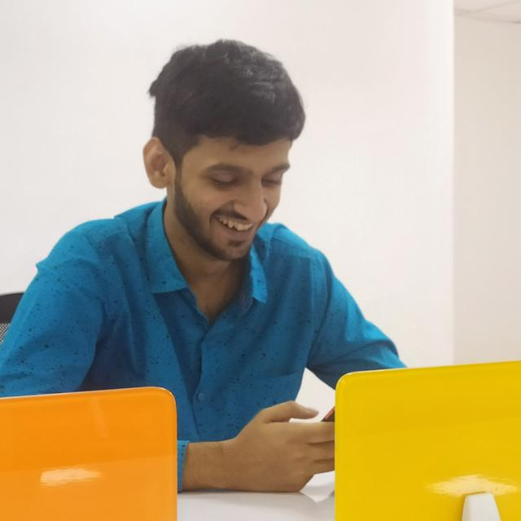

Yash Agrawal
Final year Undergraduate from Department of Materials Science and
Engineering, Indian Institute of Technology Kanpur
👉 +91-8529174350
👉 yashag@iitk.ac.in
Tech stack
C, C++, LATEX, Python, Nodejs, R, Java, SQL
Git, MS office, OpenCV
React, Next JS, HTML, CSS, JavaScript, React Native,
SpringBoot
Postgres, MongoDB, MySQL
Coursework
Data Structures and Algorithms
Probability and Statistics
Introduction to Programming
Bioinformatics & Computational Biology
Computational method in Engineering
Derivative Contracts
Introduction to Computational Sociology
Manufacturing Energy Systems
Modern Cryptology
Extra-Curricular Activities
Managerial: Helped set question paper and organise
TOSC'19, with more than 2000 registrations, in my home city Firozabad
Science and Technology: Took part in RoboTrix event
of Takneek'19 and Arduino-Design competition of SNT Code'19
Cultural: Participated in various film-making
competitions of Galaxy'20 and secured 1 st Prize in Filmy-Debate
Competition
Social Work: As an Student Guide and Academic Mentor,
helped 6 freshmen and taught 100+ students in live sessions